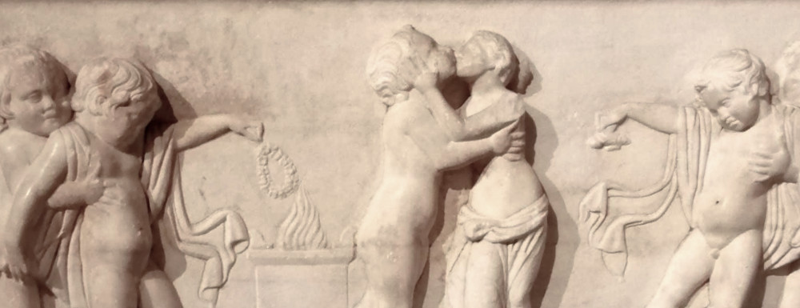

Try to remember your favorite kiss, the first one, the most passionate one
“ Before you kissed me only winds of heaven Had kissed me, and the tenderness of rain— Now you have come, how can I care for kisses Like theirs again?”